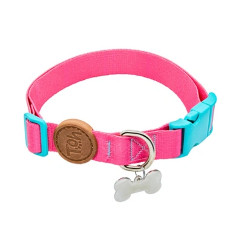

Coleira TOH com Tag ID Fiji para Cães

- Preço
- R$ 34,99
- Indicação
- Cães
- Diferencial
- Estampa exclusiva com tag id prática para identificação e fitas 100% poliéster ultra-soft
- Resistência e Segurança
- Costura em poliamida reforçada, fecho em metal de zamac e argola em aço inoxidável que não enferruja
- Apresentação
- Disponível nos tamanhos PP, P, M e G